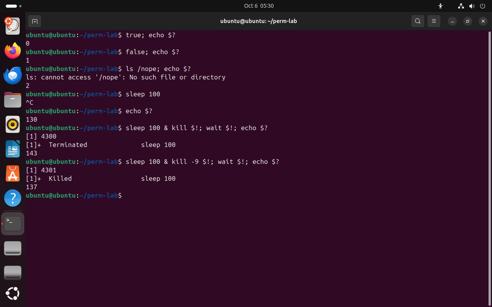
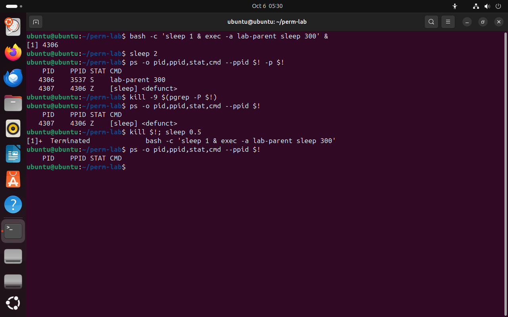

Часть 6 из 7
Завершение процесса: код возврата и зомби
В этой части разберём, какой код возвращает процесс при завершении, как по коду узнать, что процесс был снят сигналом, и почему завершившийся процесс превращается в зомби.
6.1 Код завершения
Каждый процесс, завершаясь, оставляет родителю число от 0 до 255 — код завершения. По соглашению 0 означает успех, любое другое число — ошибку. Какое число вернуть при ошибке, решает программа: ls возвращает 2, если файла нет, grep — 1, если строка не найдена. Оболочка сохраняет код последней команды в переменной $?.
Если процесс снят сигналом, оболочка показывает код 128 + номер сигнала. По этому числу видно, как завершилась программа, даже если она ничего не напечатала.
| Код | Что произошло |
|---|---|
0 | успех: true, команда выполнилась без ошибок |
1, 2, … | ошибка, номер выбирает программа: false — 1, ls без файла — 2 |
130 | 128 + 2: прервано сигналом INT, Ctrl+C |
137 | 128 + 9: снято сигналом KILL |
143 | 128 + 15: завершено сигналом TERM |
Встроенная команда wait PID ждёт завершения фонового процесса и возвращает его код. В опыте процесс запускается, получает сигнал, и wait сообщает код. Коды 137 и 143 часто встречаются в журналах контейнеров и служб: 137 — процесс сняли принудительно, например по нехватке памяти, 143 — его попросили завершиться.
true; echo $?# успехчто делает
Что делает команда. Выполняет true и печатает его код завершения.
По частям:
true- ничего не делать и завершиться с кодом 0
;- разделитель: выполнить следующую команду после этой
echo- напечатать текст или значение переменной
$?- что напечатать, код завершения предыдущей команды
false; echo $?# ошибкачто делает
Что делает команда. Выполняет false и печатает его код завершения.
По частям:
false- ничего не делать и завершиться с кодом 1
;- разделитель: выполнить следующую команду после этой
echo- напечатать текст или значение переменной
$?- что напечатать, код завершения предыдущей команды
ls /nope; echo $?# ошибка lsчто делает
Что делает команда. Пытается показать несуществующий путь и печатает код ошибки ls.
По частям:
ls- вывести содержимое каталога
/nope- что показать (абсолютный путь)
;- разделитель: выполнить следующую команду после этой
echo- напечатать текст или значение переменной
$?- что напечатать, код завершения предыдущей команды
sleep 100что делает
Что делает команда. Запускает sleep на переднем плане, чтобы прервать его клавишами.
По частям:
sleep- ничего не делать указанное число секунд
100- сколько секунд
^C# Ctrl+Cecho $?# 128 + 2что делает
Что делает команда. Печатает код завершения предыдущей команды.
По частям:
echo- напечатать текст или значение переменной
$?- что напечатать, код завершения предыдущей команды
sleep 100 & kill $!; wait $!; echo $?# 128 + 15что делает
Что делает команда. Запускает процесс, посылает ему TERM, дожидается завершения и печатает код.
По частям:
sleep- ничего не делать указанное число секунд
100- сколько секунд
&- запустить команду слева в фоне и сразу продолжить
kill- послать процессу сигнал
$!- какому процессу, PID последнего процесса, запущенного в фоне
;- разделитель: выполнить следующую команду после этой
wait- встроенная команда оболочки: дождаться завершения фонового процесса и вернуть его код
$!- какой процесс ждать, PID последнего процесса, запущенного в фоне
;- разделитель: выполнить следующую команду после этой
echo- напечатать текст или значение переменной
$?- что напечатать, код завершения предыдущей команды
sleep 100 & kill -9 $!; wait $!; echo $?# 128 + 9что делает
Что делает команда. Запускает процесс, посылает ему KILL, дожидается завершения и печатает код.
По частям:
sleep- ничего не делать указанное число секунд
100- сколько секунд
&- запустить команду слева в фоне и сразу продолжить
kill- послать процессу сигнал
-9- послать сигнал 9 — KILL: завершить немедленно
$!- какому процессу, PID последнего процесса, запущенного в фоне
;- разделитель: выполнить следующую команду после этой
wait- встроенная команда оболочки: дождаться завершения фонового процесса и вернуть его код
$!- какой процесс ждать, PID последнего процесса, запущенного в фоне
;- разделитель: выполнить следующую команду после этой
echo- напечатать текст или значение переменной
$?- что напечатать, код завершения предыдущей команды
- 10 — успех
- 21 — ошибка false
- 32 — ls не нашёл файл
- 4130 = 128 + 2: Ctrl+C
- 5143 = 128 + 15: TERM
- 6137 = 128 + 9: KILL


Весь снимок ↗Коды завершения обычных команд и процессов, снятых сигналами.
Что показывает снимок. true вернул 0, false — 1, ls без файла — 2; процесс, прерванный Ctrl+C, вернул 130, снятый TERM — 143, снятый KILL — 137.
Где это пригодится. Коды 137 и 143 встречаются в журналах служб и контейнеров: по ним видно, что процесс снят сигналом: 137 — KILL, 143 — TERM.
6.2 Зомби
Когда процесс завершается, ядро освобождает его память и файлы, но оставляет запись в таблице процессов: в ней хранится код завершения. Запись удаляется, только когда родитель прочитает код вызовом wait. Пока этого не случилось, процесс — зомби: он уже ничего не делает и ресурсов почти не занимает, но его PID остаётся занятым.
Зомби нельзя завершить сигналом: процесса уже нет, сигнал доставлять некому, и даже KILL ничего не меняет. Убирает зомби только его родитель. Если родитель не вызывает wait из-за ошибки в программе, завершают родителя: зомби становится сиротой, его усыновляет PID 1 или процесс-приёмник сеанса, а тот сразу читает код и удаляет запись.
Один зомби занимает только запись в таблице процессов. Если родитель постоянно порождает потомков и не забирает их коды, зомби накапливаются, и в какой-то момент система не сможет выдать новый PID — число PID ограничено.
bash -c 'sleep 1 & exec -a lab-parent sleep 300' &# родитель, который не ждёт потомковчто делает
Что делает команда. Запускает родителя lab-parent, который порождает потомка и не ждёт его: потомок станет зомби.
По частям:
bash -c '…'- запустить bash и выполнить команды из строки
sleep 1 &- потомок: спит секунду в фоне и завершается
exec -a lab-parent sleep 300- заменить оболочку программой sleep 300 под именем lab-parent; она не ждёт потомков
&- запустить всё в фоне
sleep 2что делает
Что делает команда. Ждёт две секунды, чтобы потомок успел завершиться.
По частям:
sleep- ничего не делать указанное число секунд
2- сколько секунд
ps -o pid,ppid,stat,cmd --ppid $! -p $!# родитель и потомокчто делает
Что делает команда. Выводит родителя lab-parent и его потомков.
По частям:
ps- вывести сведения о процессах
-o pid,ppid,stat,cmd- выводить столбцы pid,ppid,stat,cmd
--ppid $!- выбрать потомков процесса $!
-p $!- выбрать процесс с PID $!
kill -9 $(pgrep -P $!)# KILL зомбичто делает
Что делает команда. Посылает KILL потомку lab-parent — зомби.
По частям:
kill- послать процессу сигнал
-9- послать сигнал 9 — KILL: завершить немедленно
$(pgrep -P $!)- подставить вывод команды pgrep -P $!
ps -o pid,ppid,stat,cmd --ppid $!# зомби на местечто делает
Что делает команда. Выводит потомков lab-parent.
По частям:
ps- вывести сведения о процессах
-o pid,ppid,stat,cmd- выводить столбцы pid,ppid,stat,cmd
--ppid $!- выбрать потомков процесса $!
kill $!; sleep 0.5# завершить родителячто делает
Что делает команда. Посылает последнему фоновому процессу TERM и полсекунды ждёт, чтобы оболочка успела сообщить о завершении.
По частям:
kill- послать процессу сигнал
$!- какому процессу, PID последнего процесса, запущенного в фоне
;- разделитель: выполнить следующую команду после этой
sleep- ничего не делать указанное число секунд
0.5- сколько секунд
ps -o pid,ppid,stat,cmd --ppid $!# зомби убранчто делает
Что делает команда. Выводит потомков lab-parent.
По частям:
ps- вывести сведения о процессах
-o pid,ppid,stat,cmd- выводить столбцы pid,ppid,stat,cmd
--ppid $!- выбрать потомков процесса $!
- 1Z: потомок завершился, родитель lab-parent его не ждёт
- 2после kill -9 зомби остался: процесса уже нет
- 3родитель завершён сигналом TERM
- 4потомков у родителя больше нет: запись убрана


Весь снимок ↗Зомби не снимается сигналом и исчезает после завершения родителя.
Что показывает снимок. Потомок lab-parent стал зомби Z; kill -9 его не убрал; после завершения родителя у lab-parent больше нет потомков — запись удалена.
Где это пригодится. Если зомби копятся, ищут их родителя в столбце PPID и перезапускают его; посылать сигналы самим зомби бесполезно.
Итоги части 6
- Код завершения: 0 — успех, другие числа — ошибка; оболочка хранит его в
$?. - Процесс, снятый сигналом, получает код 128 + номер сигнала: 130 — Ctrl+C, 143 — TERM, 137 — KILL.
- Зомби — завершившийся процесс, код которого родитель ещё не прочитал вызовом
wait. - Зомби не снимается сигналом; его убирает родитель или, после завершения родителя, PID 1.
В отчётСнимок с кодами 130, 143 и 137 и объяснение каждого числа.